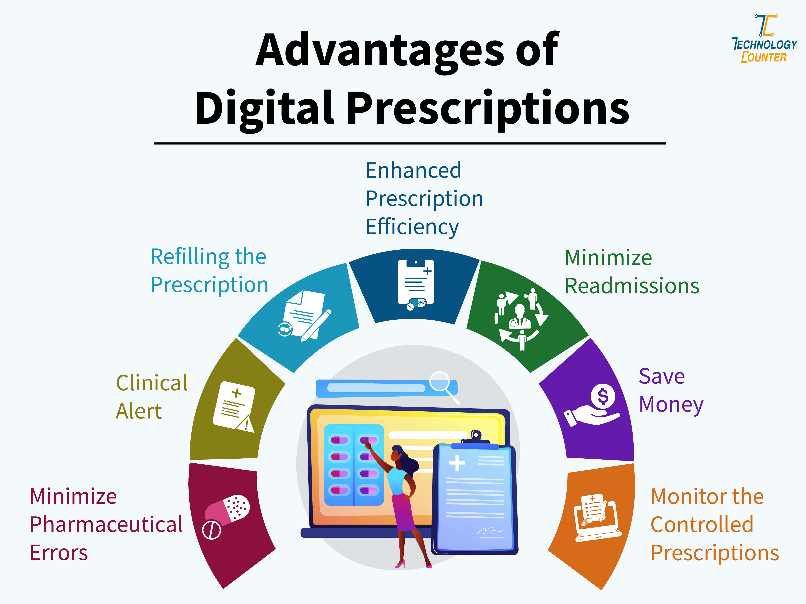
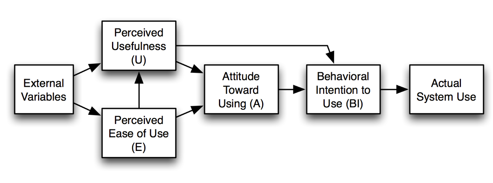
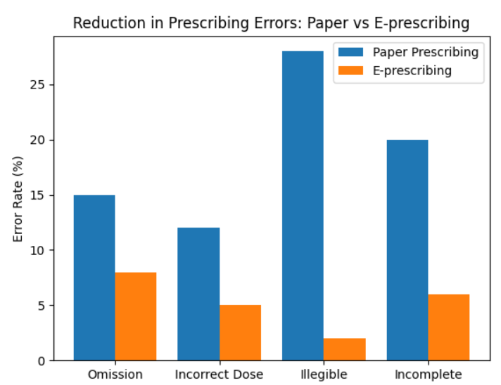

PROJECT OVERVIEW
围绕电子处方技术分析其行业影响、优势、挑战与成功原因，并使用 Technology Acceptance Model（TAM）解释感知有用性、感知易用性如何推动技术采纳。
PROJECT TYPEDigital Transformation
CORE TOOLS / METHODSTAM · Technology Adoption · Digital Transformation · Healthcare
PORTFOLIO PURPOSE用于校招展示项目方法、工具与业务理解能力
MY CONTRIBUTION
我做了什么
- 梳理电子处方从纸质到数字化的发展路径
- 分析安全、效率、数据整合与流程转型等行业影响
- 使用 TAM 分析 Perceived Usefulness 与 Perceived Ease of Use
- 比较不同处方技术并总结技术成功落地条件



What this proves
该项目强化了我使用管理与信息系统理论解释数字化技术落地的能力。